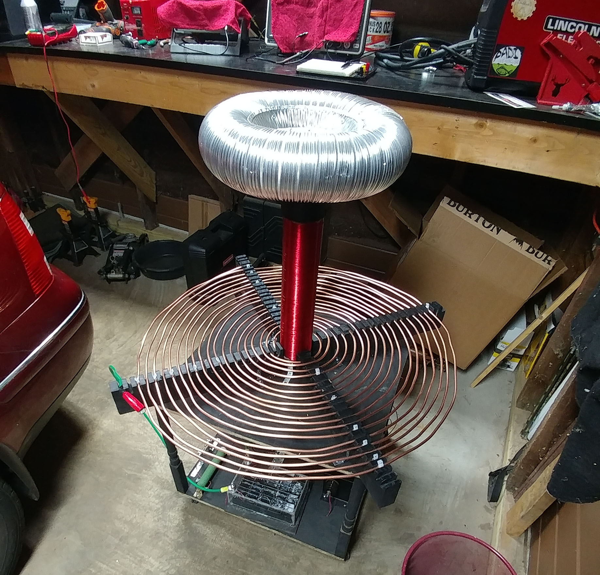
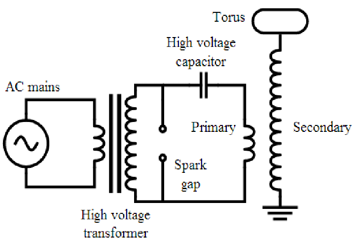
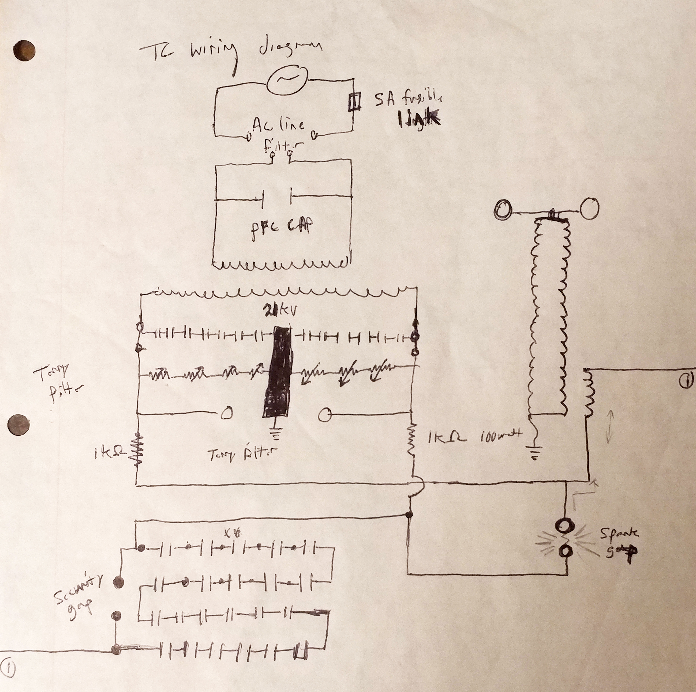
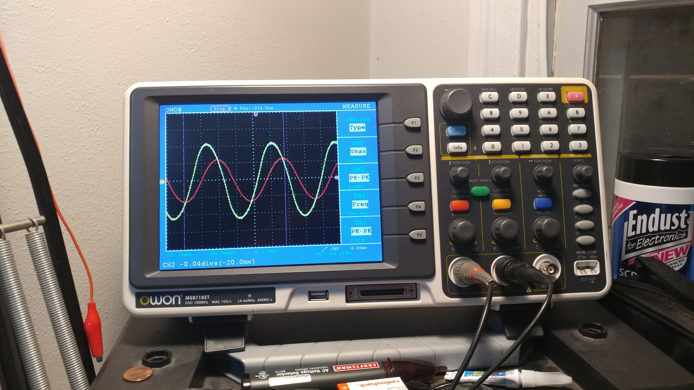
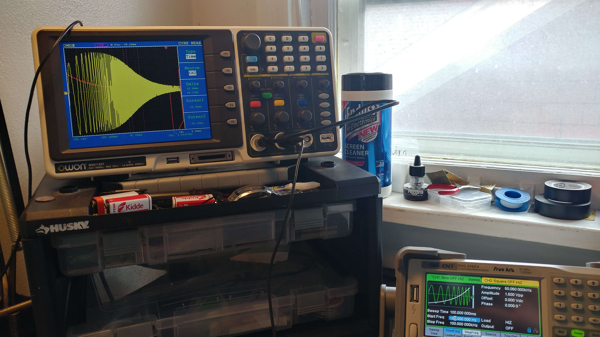
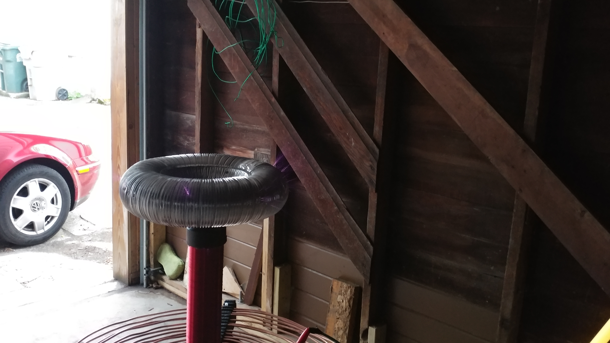

My Journey To Build A Working Tesla Coil

Understanding the underlying principles of electronics
The idea of the Tesla coil came from its inventor Nikola Tesla. A visionary genius, Nikola Tesla revolutionized humanities ability to harness electrical power, and in the end his Alternating Current (AC) won out in the War Of Currents against Thomas Edison. Along the way he designed several incredible electrical devices including: the AC transformer (transforms AC voltages to higher or lower levels), the AC induction motor, a steam powered electricity generator (He lit up the Chicago worlds fair in 1893 for the first time ever) and the incredible but highly inefficient Tesla Coil. The idea of the Tesla Coil was to transmit power directly the people. Thats right, through the air without the need for wires. We now know that he was obviously unsuccessful, but his idea is an incredible source of inspiration, and furthermore he didn't completely fail. Actually the Tesla coil does work, but it its highly inefficient because of the inverse square law that all EM waves including the ones his coil produced simply must follow. Transmitting power for our daily uses is simply to inefficient, not to mention dangerous (imagine people with pacemakers...)
Seriously, why would anyone build a Tesla Coil?
I'm a very patient person, but I almost gave up on this one... Let me tell you the story of my attempt to get this working alongside finishing my Ph.D.
When I first began graduate study I came to the realization that I was not only fascinated by my own field of study (Microbiology & Genetics), but also the realm of physics, specifically the electromagnetic force and the magic that comes with understanding it. Although I realized early on that I would likely never be on the level of understanding of Physics as I am with my own field, I began to dabble in electronics. It started simply enough with my own attempts to control direct electrical current (DC) via resistors and transistors, needless to say many were sacrificed such that I could understand even the most basic principles (i.e. Ohms Law V=IR). As I became more adept, I realized I needed a project. A real project, something worth doing, that would require me to truely understand the nature of electricity. So I figured, why not learn from the very best, Tesla himself.
My god was it difficult. I later realized, part of the reason I picked this project is because I knew it would be very difficult. I knew that building a Tesla Coil would put me one step closer to being the modern day electrical wizard I wanted to be. Never before had I struggled so hard to understand things that seemed to come easily to everyone else. It is safe to say, that building a functional tesla coil (i.e. one that does not immediately destroy its components) requires at least an intermediate level of mastry in the realm of electrical control. This is not to discourage newbies from trying, just realize what your getting into, the inherent danger of high voltage AC and that you may put > $700 into this before seeing anything happen. Furthermore, the process involves understanding the principles of Alternating Current, Transformers, RLC circuits, Impedance (the evil twin AC equivalent of DC resistance), and how electrical circuits evolve through time. As I said, at the moment of ordering the first parts I just didn't quite understand the gravity of the journey I just embarked upon. I am so happy I did it, I wouldn't trade my coil and what I learned from it for anything.
Below I will only demonstrate the basics as: 1st. I'm barely qualified to :) and 2nd tons of resources exist on how to make a functional Tesla Coil. I will demonstrate the basic principles of a traditional (non-solid state) Tesla Coil and show you one of the only times I've ever almost given up on a project, and why I am sooooo happy I didn't.
Tesla Coil Basics

A tesla coil is a loosely coupled high frequency and voltage AC transformer that emits electrical energy as radio waves. It has two circuits, the primary and the secondary. The primary controls the power input to the secondary via a balance of charging and discharging a high voltage capacitor (7 nF, >50kV breakdown resistance) across a spark gap and into a low impedance wire inductor (~100uH). If improperly controlled via safety gaps and bleeder resistors the primary circuit will rip itself apart within moments of normal operation. The primary capacitor is charged via a step up AC transformer that takes line 120V AC and increases the voltage to 15kV AC. After the primary capacitor is charged fully the primary spark gap between the capacitor and the low impedance coil arcs across effectively turning an open circuit into a current flowing RLC circuit. At this point the transformer that supplied the energy is out of the game (as it only operates at 60 Hz) and the electrons slosh back and forth in the inductor at a very high frequency. This sloshing,if properly tuned, induces a very high voltage in the secondary RF coil (inductor). The primary inductor coil on a homemade low power coil (< 1000 watts like mine) traditionally has between 5 to 20 coils of wire and the secondary inductor coil has anywhere from 700 to 1000's of turns of higher guage wire. When energy is transfered between the two, a massive voltage rise occurs in the secondary. This voltage rise is the reason for the electromagnetic wave emission and the pretty streamer arcs that come off of the torus (caused by ionization of nearby gases).
How I actually did it:
I began as I do with many of my projects, I did a ton of research, constantly questioned my understanding of the basics and why I was doing this and eventually I drew up my first tesla coil schematic.

It wasn't great, in fact looking back at it now, it is not even a good schematic :). Many component values and build parameters are simply missing or unclear. But if I've learned anything about completing electronics projects, it is that you have to start somewhere. Many great resources were used in the production of my tesla coil you can find them below:
- Christopher Gerekos undergraduate thesis which describes the building of every component of his very own Zeus Tesla Coil
- HV tesla: an exellent resource for anyone looking to appropriately build a TC
- Jochen Kronjager's High Voltage Page probably saved my life a few times with safety tips on how to handle high voltage AC electricity.
- Kevin Wilson's Tesla Coil Design page
- Tesla Map Program to assist in design parameters
I mentioned above that many things are missing from that original schematic. What did I mean by that? Looking back I can see that several important pieces of data had yet to be filled in. The reason is two fold: 1st At the time of drawing this I didn't exactly know what component values would pair well, 2nd Cost. You always have to optimize for what you can afford, however in my case cost almost indirectly lead to me failure with this project.
The details that are missing include the electrical values and the corresponding geometry of the following parts:
- Primary Coil: Width, Length, Gauge, and (i.e. geometry) and coil turns, which dictates inductance
- Toroid: Geometry dictates frequency response of the secondary circuit
- Seconday Coil: Geometry and total turns, final inductance
- Tesla Coil Ground: Composition...IT CANNOT BE YOUR HOUSE GROUND!!!
- Input Transformer: Input & Output Voltage, Maximum Output Wattage
- Primary Capacitor: Capacitance (nanoFarads), Voltage Maximum
- Primary Spark Gap: Composition, distance between terminals
- Security Spark Gaps: Composition, distance between terminals
- Power Factor Correction (PFC) Capacitor: Capacitance
Component Builds and Buys:
The NST-Transformer:
I started with the transformer which will determine how much power your coil will be able to instantaneously output. It also determines what your primary capacitor size should be. For further information I recommend Kevin Wilson's Tesla Coil Design page. I ended up ordering a 15,000 volt NST Franceformer which can output a maximum of 30 ma in a dead short. This ends up being ~450 watts max output.
The Primary Capacitor:
To ensure your primary capacitor is up to the challenge of charging and discharding at 15kV, tesla coilers recommend generating a capacitor with between 1.5-2X the voltage rating. Additionally we must correct for the fact that the voltage reported on the transformer is the root mean sequare (RMS) of the peak AC voltage. To get the peak AC voltage we must multiply the RMS * 1.414 (15000 * 1.414 = 21kV). The final consideration is that your capacitor must NOT be resonant with the secondary coil of your transformer. For safety, I built my capacitor to withstand voltage spikes up to 50KV and its final capacitance was measured at 7nF. I also added 10 MOhm bleeder resistors between each series capacitor. The goal of bleeders is to bleed off the dangerous high voltage between TC runs as heat in the resistors. The final capacitance I measured (7nF) was a little closer than I'd like to be to the resonant capacitor with my secondary (5nF), but I don't always get what I want, especially on a budget :). With regards to performance, it is logical that the larger your primary capacitor is, the more energy you can store and thus the more powerful your TC arcs can be when tuned properly.
The Secondary Coil:
Next, I wound the secondary coil. I recommend bingeing a TV series you've always wanted to see, because this is gona take a while, especially if you do it by hand. I chose 26 gauge coated magnet wire, due to is ampacity and heat ratings and I picked a 3" piece of PVC and started wrapping coil after coil. Some 900 coils and 2 weeks later, I cut the final wire, removed the coating from the ends. My amplifier was near complete
The Terry Filter:
I also spent much time and effort in the winter of 2017 completing a Terry Filter, better documented here. Briefly, the goal of the Terry filter is to protect the secondary windings on one of the larger investements in any Tesla Coil, the transformer. The capacitors in the terry filter take high frequency AC (10-100's of KHz) that is coming back up the primary circuit (after charging the primary capacitor and arcing across the primary gap) and safely dumps it to ground. Meanwhile the varistors and the safety gap dump high voltage AC to ground. In this way your NST is protected from massive voltage surges and high frequency noise that would otherwise travel back up the line.
Failure, impatience and misunderstanding
I got impatient and I jumped the gun... At this point I had been working for 6 months and invested $500 into this tesla coil. I now had a tested NST-transformer, a 50 kV capacitor and a secondary coil. What else was left ? All I would need to do is slap a primary coil on this sucker, craft a torus, tune it all and I would have a working tesla coil in no time.
So that is exactly what I did. I hastily crafted a movable painted plywood mount. I fashioned a torus made of from aluminum ducting and two aluminum pie tins. I assembled 4-5 turns of 6 gauge solid copper wire around my secondary coil, due to the high cost of the wire. Finally, I assembled all the components as I thought they should be and I turned the auto-transformer to a low setting and hit the on switch. I looked for the first light. The primary gap lit brilliantly bright and was much louder than I thought it would be. Uh oh, the neighbors are not gona like this :)... However, upon closer inspection, it seemed nothing was coming off the torus, no sparks, nothing, just alot of sparks and noise from the primary circuit... To my dismay, no amount of cranking on the auto-transformer or tuning could fix it. My coil was DOA, the primary circuit worked fine, but the secondary seemed to completely ignore it.
Up to this point in my electronics exploration, I was simply following what other "wiser" people told me to do, because when it worked, it felt absolutely magical... Never before had I faced such a complex problem, and WORSE I had no idea what was wrong or even how to figure out what was wrong. Why wouldn't my tesla coil do the cool sparky thingy everyone else's did? I was doomed. It was another 18 months until I had accrued enough knowledge, courage and capital to retry the project...
A most valuable lesson taught by nature itself
The lesson was: all electronic devices follow the laws of physics, and as such, if you desire your custom built electronics to work, then you must understand the rules that govern their operation. Those rules are written in the very fabric of nature and can often be adequately described by mathematical equations. If you refuse to do the math, GO FURTHER, YOU SHALL NOT...
I decided that winter, I could no longer be humiliated by my own ignorance. I had to know what was wrong and I had to fix it! In hindsight, retrying this project one more time was unquestionably one of the best decisons I've ever made . I set about pouring over the websites described above where I found loads of descriptions of the frequencies of operation of the primary and secondary circuit and the parameters of the coils and capacitors involved. They generally matched my own parameters, but I had never bothered to measure the primary and secondary coil inductance. Measuring inductance is difficult if you don't have an LCR meter and many forum users had implied it wasn't important and you could simply tune your way out of understanding it. Well, it didn't seem obviously likely to me, but at least I now had a target for what went wrong. Could I measure and calculate my way out of this problem ?


Yes, yes you can! It turns out measuring and calculating all unknown variables is the only way out of an electronics problem. Better yet, it almost always works the first time. You must be: adequately patient, knowledgable and have the appropriate equipment.
The defining realization
After much deliberation I decided the primary and secondary coil were improperly coupled. i.e. the primary coil was not transferring its energy to the secondary coil, thus no sparks... So why would that happen? My failure was a simple misunderstanding of how tesla coils operate, that lead to a much deeper personal understanding of all electronics. FAILURE, YES... THE GREATEST TEACHER, FAILURE IS.
I learned that certain radio frequency circuits (like Tesla coils) often operate at multiple levels of time. In the case of a tesla coil, two levels of frequency and therefore operational time exist within the circuit. Unfortunately, both levels are far beyond normal human senses. The first frequency/operational time increment is that of the mains and NST transformer (60 Hz, i.e. 60 wave cycles per second, 1 cycle per 16 milliseconds). This is the frequency at which the primary capacitor can be charged by the NST. However, after the first wave charges the capacitors to its maximum and the primary spark gap fires connecting the primary inductor to the primary capacitor, the NST is effectively out of the game and the Tesla coil operates on its second time scale. On this time scale (50,000 - 500,000 Hz, 1 cycle per 2 microseconds) the electrons slosh back and forth in the primary coil from one side of the capacitor to the other (charging and discharging it) propelled by the inductor capacitor resonant frequency (just like a tank circuit). Therin lies the rub...
For a tesla coil to operate properly the primary and secondary circuits must be tuned to the same resonant frequency for the energy to transfer efficiently. Since I had no idea what my primary or secondary coil's inductances were, I could not calculate what these self resonant frequencies should be. In order to solve this I found methods to calculate inductance and ESR based on: the resonance of a known capacitor and unknown inductor in a tank circuit , the voltage phase shift caused by the inductor or capacitor and finally measuring the self resonant frequency of the inductor. Most of them agreed on the values of my coils. Thus, it turned out there were many ways to solve my problem, I just had to understand enough about the operation of a tesla coil to ask the right questions...
I discovered that my hastily crafted primary coil had an inductance value that was far too low to properly transfer the energy of the primary circuit into the secondary. This meant it was impossible to tune the primary to the proper frequency... I simply didn't have enough expensive 6 gauge copper wire on the initial coil. I bought more, retapped the primary coil at the appropriate length and the results are below
The Glorious First Light
Finally, it works...it works!!!!!
Tuning and Improved Streamer images
Plasma emission without nearby conductor
